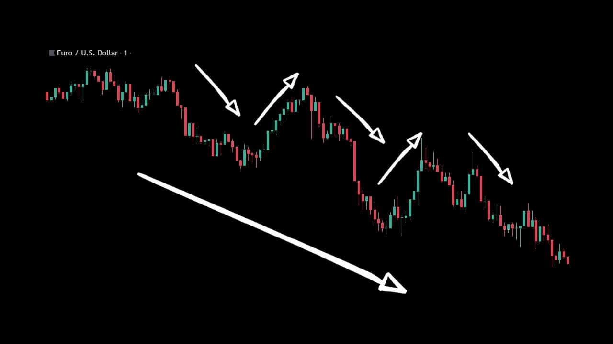
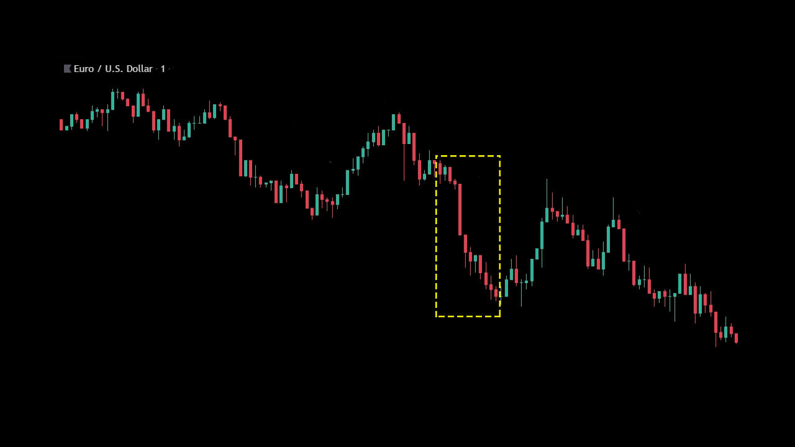
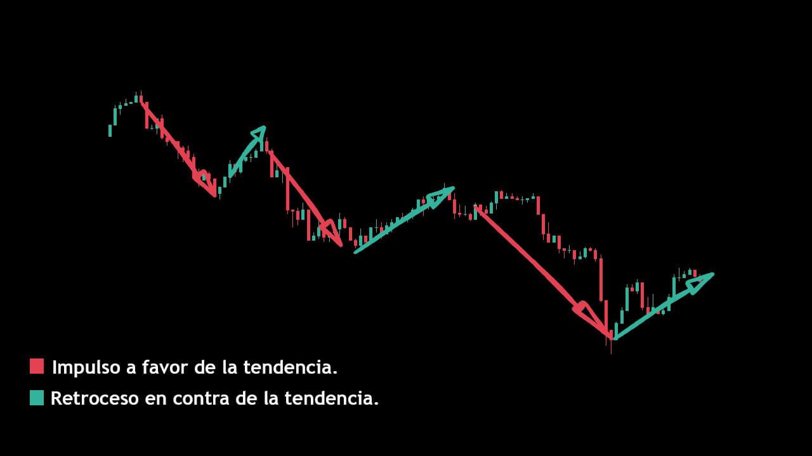
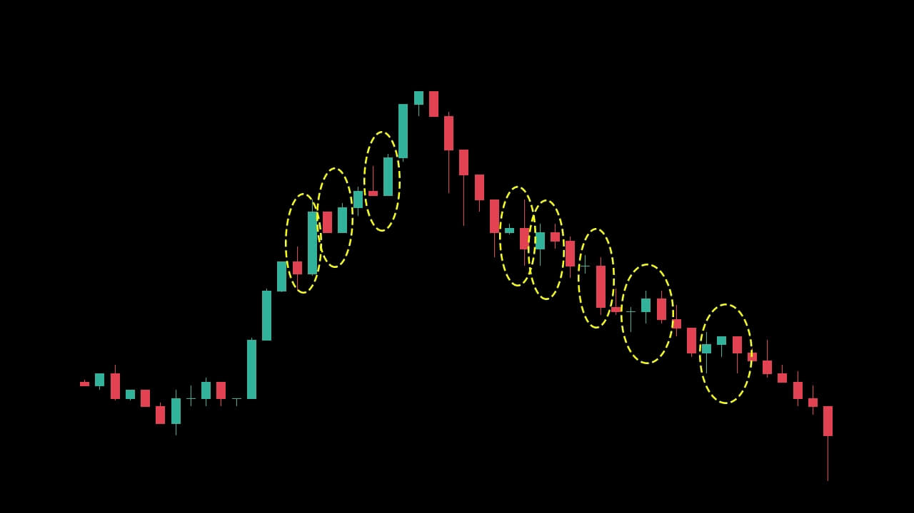
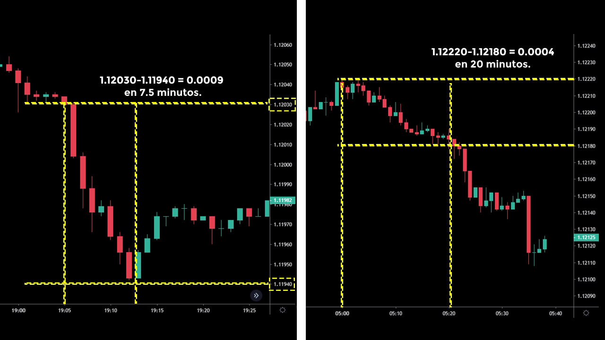

Tendencias y Fractales
Bienvenido al material de apoyo de preguntas y respuestas #1. Antes de continuar mira el vídeo.
Impulsos y Retrocesos
En la última clase hablábamos sobre las tendencias generales y secundarias del gráfico, podemos notar que el precio rara vez se mueve de manera constante y lineal.


La mayoría de veces las tendencias están compuestas por impulsos y retrocesos.
Cómo puedes notar los impulsos son a favor de la tendencia general y los retrocesos son en contra de la tendencia general.

Para que el precio pueda continuar con la misma dirección es necesario que vaya creando máximos y mínimos hacia esa misma dirección.
Mercado Fractal
Los fractales son patrones repetitivos en diferentes escalas, estas escalas pueden ser físicas o temporales.
Podemos encontrar ejemplos de fractales en la naturaleza, cómo en los ríos o en las hojas de algunas plantas.
El mercado de valores surge por el comportamiento humano, nuestro comportamiento es repetitivo, por lo tanto los fractales también forman parte del historial de precios.

Fuerza en las tendencias
Una tendencia es fuerte por su angulo de inclinación, ese angulo nos dice que el precio esta recorriendo bastante distancia en poco tiempo. Pero también podemos encontrar movimientos constantes del precio pero a mayor tiempo.

Podemos notar que el avance de este ultimo ejemplo es lento, y las velas presentan poco volumen, es decir poco cuerpo. Ambas tendencias son fuertes, nos muestran insistencia del precio por continuar su camino.
Mientras que con esta otra tendencia débil el precio mismo va contrarrestando el recorrido, son velas de poco avance.
Los ejemplos se presentan en tendencias especificas, si tu tarea buscar ejemplos en la tendencia contraria 🙂